小丑牌：心动牌局 · 上线素材全集（11-02 第二版）
TapTap 1003219 · 测试包 1.0.32。所有截图和录屏都是 1.0.32 的真实游戏画面（无头渲染录制，声音是游戏原声和女主配音）。
图标 · 第六轮 3 个方案（最新）
方案 1 · 第五轮方案 2 换成荷官装
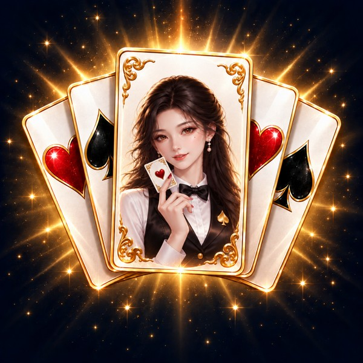
牌、构图、背景、她的脸和手里的红心 A 都不变；衣服换成第五轮图 3 的白衬衫 + 领结 + 黑缎马甲 + 黑桃胸针，小丑帽也去掉
方案 2 · 同上，保留小丑帽（我出的）
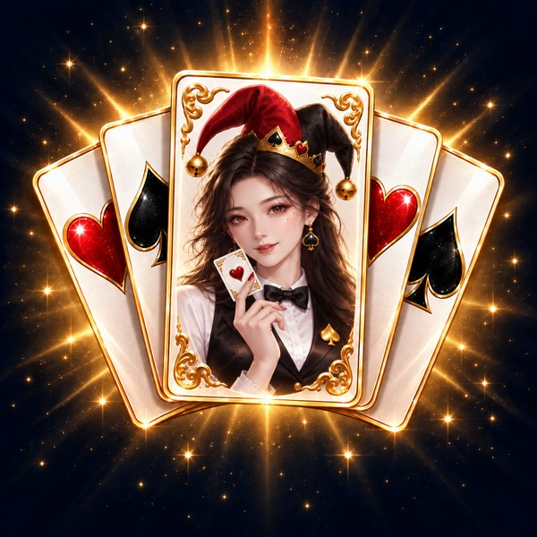
荷官装 + 红黑小丑帽：一眼看出「小丑牌」，又不像小丑扮相
方案 3 · 金色小丑冠 + 爆分光环（我出的）
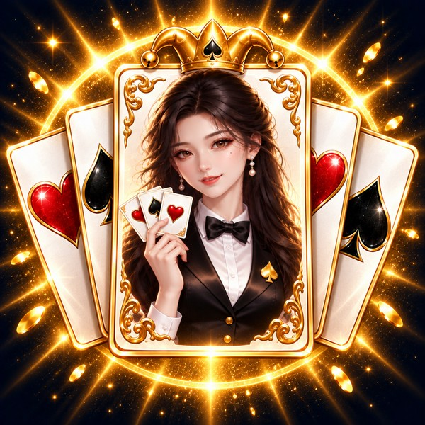
中间那张牌更大，顶上一枚金色小丑冠（和游戏 logo 呼应），后面金色光环；荷官装，手里三张牌
缩小到 128 / 64 / 48 像素
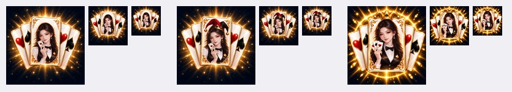
图标 · 第五轮 3 个方案
按你的参考图把两边的牌收紧：五张牌从同一个点展开，外侧只转约 20°，两边只露一窄条和花色；晚晴换成和牌局更搭的装扮。
方案 1 · 荷官装
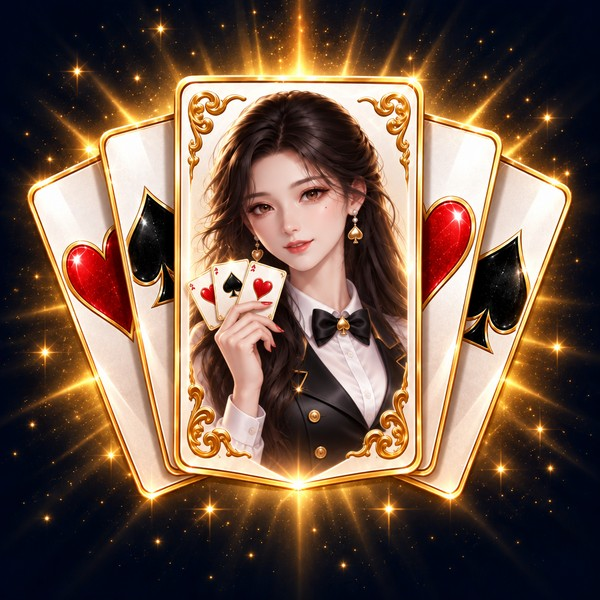
黑缎马甲、白衬衫、领结、黑桃胸针、花色耳坠，手里捏三张牌
方案 2 · 小丑牌装
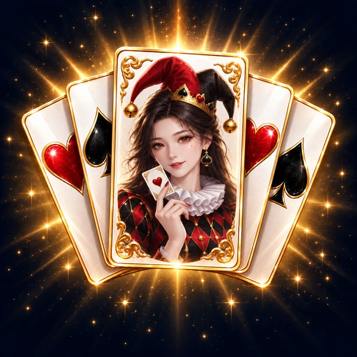
红黑小丑帽带金铃、白色褶领、红黑菱格外套，手里一张红心 A——她就是这副牌里的「小丑牌」
方案 3 · 我推荐的
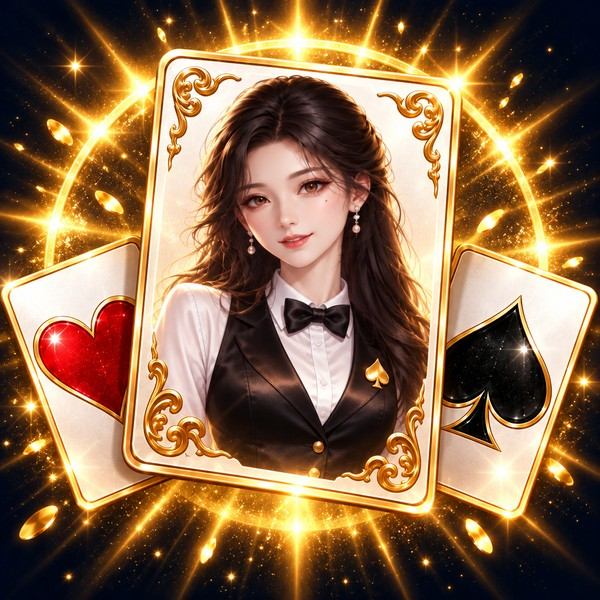
只留一张大牌 + 两侧红心、黑桃，金色爆分光环在后面：人脸最大、缩小后最好认，也最像「打出高分」的一刻
缩小到 128 / 64 / 48 像素
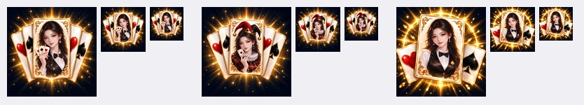
图标 · 第四轮 2 个方案
方案 1 · 第三轮方案 1 的构图，中间换成晚晴
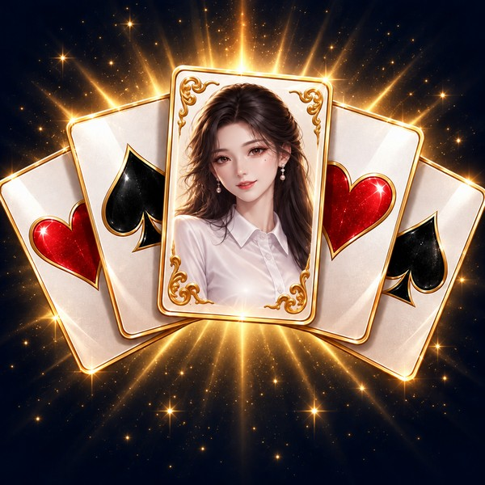
五张牌、位置、背景和第三轮方案 1 一样，只把中间小丑女换成第三轮方案 3 的晚晴半身像
方案 2 · 第三轮图 2 的布局 + 图 1 的卡牌 + 图 3 的晚晴
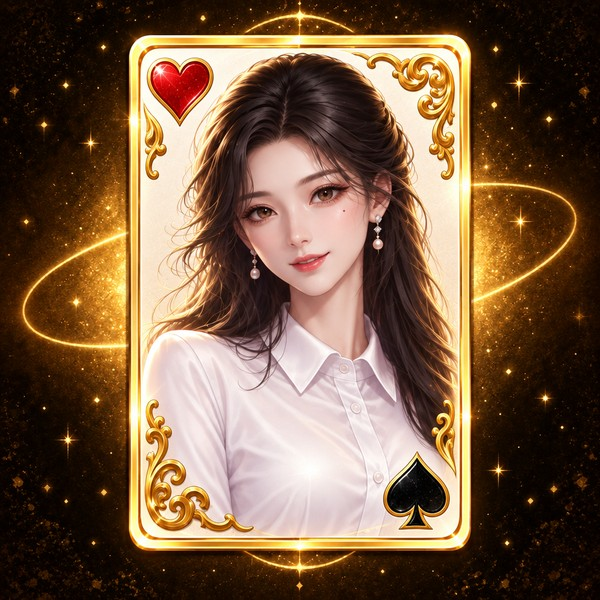
一张正放的牌、深金背景和金色光环（图 2），白底金边卡牌（图 1），晚晴半身像（图 3）
缩小到 128 / 64 / 48 像素
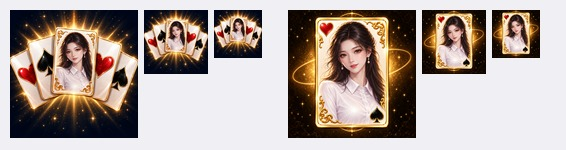
图标 · 第三轮 3 个方案（11-02 晚）
方案 1 · 现在的图标去掉手和粉色氛围
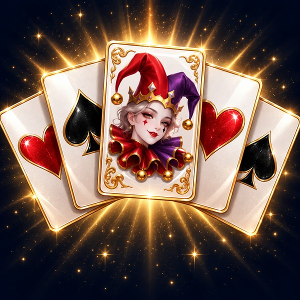
只留五张牌，背景换成深夜蓝黑 + 金光
方案 2 · 晚晴小丑牌，平面正式
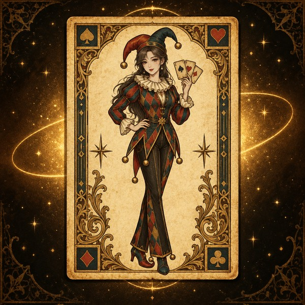
参考图 2：一张正放的复古雕版牌，晚晴穿小丑装、拿着三张牌，人和牌同一种画法和配色
方案 3 · 方案 1 堆得更密，中间是晚晴
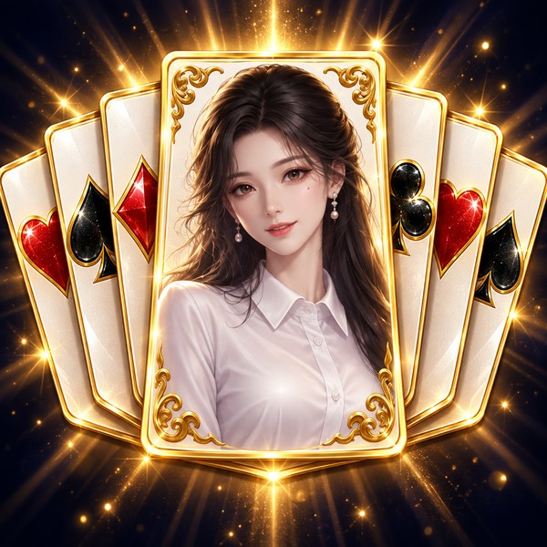
七张牌紧密叠成扇形，中间那张放大，画晚晴半身
缩小到 128 / 64 / 48 像素
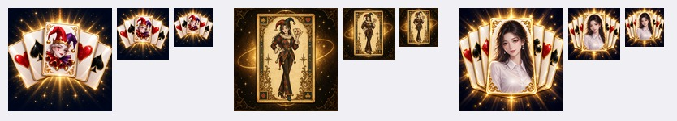
一、清单
| 素材 | 状态 | 说明 |
|---|---|---|
| 图标 | 待你选 | 第三轮 3 个方案在最上面；第二节是上一轮的。选定后导出 1024 / 512 上传。 |
| 游戏截图 ×6 | 已定 | 按你给的顺序（第三节），商店图重拍了。 |
| 实机录屏 | 已重录 | 47.5 秒（第四节）：登录 → 大厅 → 继续比赛 → 一手打穿 → 买装备 → 薇拉剧情。 |
| 宣传图 16:9 / 1:1 | 可用 | 11-01 版（第五节），和现在的版本不冲突。 |
| 宣传片 | 可用 | 女主 CG 以外 2 倍速，16.1 秒，结尾淡出（第五节）。 |
| 加载封面 / 游戏内 logo | 可用 | 就是截图第 7 张那张。 |
| 简介 / 一句话 / 推荐语 / 开发者的话 / 标签 | 已改好 | 第六节。仓库 store/listing.md 和 Maker 的一句话简介已同步；TapTap 后台的文字提审时一起写入。 |
| 隐私政策 | 已发布 | privacy.html，主体 FIRE工作室；换厂商要改。 |
| 玩家群 | 你已填 | 你在 TapTap 开发者后台填好了。 |
| 发布厂商 / 上线方式 | 待你定 | 现在挂在 FIRE工作室 507397；预约还是直接提供游玩、立即还是定时。 |
| 功能声明 / AI 内容声明 | 待你确认 | 建议：联网=是（云存档、排行榜、应援票数），内购=否，AI 内容=是（美术、配音、音乐 AI 辅助），IP 授权=否，文字剧情=是。 |
| 首页推荐素材类型 | 待你定 | 建议 BANNER_4（16:9 宣传图）或「预告片」（宣传片）。 |
二、图标 · 3 个方案
按参考图里 logo 卡牌的样式：象牙白牌面、金色花纹边框、角上的花色徽章、顶上金色小丑帽，深紫星空背景。图上没有任何文字。
A · 带晚晴的卡牌
B · 不带人物
C · 5 张牌扇形铺开
缩小到手机图标大小的效果
现在用的图标
三、游戏截图（6 张，按商店展示顺序，1080×1920）
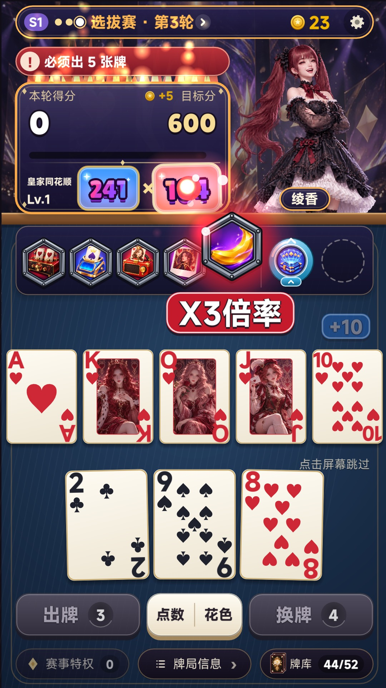
1 · 出牌：皇家同花顺 241 × 104，第五件装备正在触发「X3倍率」，装备栏和计分没有被挡

2 · 商店

3 · 大厅

4 · 晚晴：晋级 32 强的拥抱 CG

5 · 薇拉对话

6 · 登录宣传图（纯图）
备选（原图 1）

晚晴切入「皇家同花顺 25,821」
新图 1 的「本轮得分」还显示 0：游戏要等装备全部结算完才把总分加上去，而那之后两帧晚晴就切入挡住装备了，所以选了装备触发的这一刻。
四、实机录屏（47.5 秒，10.8 MB）
| 时间 | 内容 |
|---|---|
| 0–2 秒 | 登录界面（logo、点击任意处开始） |
| 2–5 秒 | 大厅，点晚晴：「回来了？」（配音），点继续比赛 |
| 5–23 秒 | 一张张点出方块皇家同花顺，装备连锁 +3倍率、X3倍率带火焰，晚晴切入，25,821 对目标 2,000，一手打穿 |
| 23–24 秒 | 结算立刻收下（看视频按钮只露约 1.2 秒） |
| 24–28 秒 | 商店买装备「右侧复制器」 |
| 28–47.5 秒 | 薇拉剧情：CG 和配音「Nyet。别碰。」、居中小系统框「好感｜薇拉 -50 · 符号位在闪」「情报｜她的护照，不在她手里」、三选一、她的配音回应，停在最后一句结束 |
TapTap 要求前 5 秒有核心玩法：这一版登录 + 大厅占了前 5 秒，第 5 秒开始出牌。审核一般看得过去；如果担心，我可以把登录 + 大厅压到 3 秒。
五、宣传图和宣传片
16:9（11-01 版）

1:1（11-01 版）

宣传片 · 再加快版 16.1 秒（原 25.9 秒）
女主 CG 不变（晚晴 1.92 秒，其他人 0.72 秒）；女主以外的 AI 打牌镜头全部 2 倍速：小丑牌翻转 1.92→0.96 秒、拍下同花顺 1.44→0.96、能量合成爆分 2.40→1.44、logo 入场 2 倍速后停 2.6 秒。结尾没有胜利音效，音乐最后 3 秒淡出。
六、文字
一句话简介
首页推荐语（18 字）
简介
开发者的话
标签
七、这一轮改动的画面
补给包图标：一个装满东西的容器

应援：前三名描边字，点她说话

系统独白：居中靠上的小框